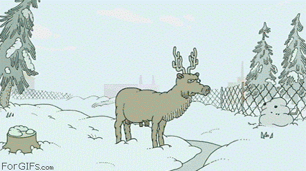
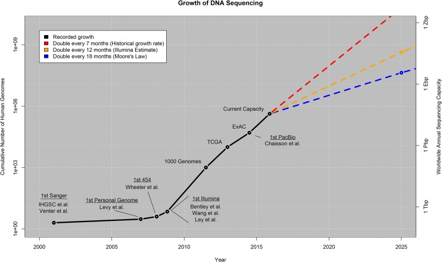

Building
Bridges
while walking on them, or
how we learned to stop worrying, that no bridge is the same, that wind is out of our control and that everything old is new again
Who?



What?
SevenBridges provides the software platform that makes the analysis of and collaboration on population-scale genomics data possible.
Why?
